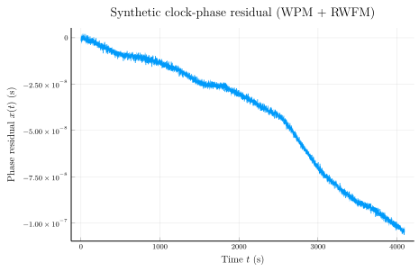

Phase data and frequency data
SigmaTau operates on two timing-data containers: PhaseData and FrequencyData. Both wrap a regularly-sampled vector and the sample interval $\tau_0$. Every public Stab function (adev, mdev, hdev, the total family, …) accepts either container — the package converts internally as needed.
This tutorial walks through:
- Constructing a
PhaseDatafrom synthetic samples. - The same operation on a
FrequencyDatarecord. - The phase ↔ frequency identity that ties the two together.
The companion tutorial Computing the Allan deviation picks up where this one ends, running adev on the same fixture.
using SigmaTau
using RandomSynthetic phase residuals
Phase residuals $x[k]$ (in seconds) sampled every $\tau_0 = 1$ s. We synthesise a realistic mix: white phase modulation (WPM) plus a random-walk frequency component (RWFM, shows up as a curving drift).
Random.seed!(20260509)
τ₀ = 1.0
N = 4096
wpm = randn(N) .* 1e-9
rwfm = cumsum(cumsum(randn(N) .* 1e-12))
x = wpm .+ rwfm
pd = PhaseData(x, τ₀)PhaseData{Float64}([-1.6343111539539689e-9, -1.1780042604019418e-9, -7.186485805871439e-10, -2.1347474920668491e-10, 1.892936594287127e-11, 5.085984933224569e-10, 2.765483270645613e-10, 3.9541393498485826e-11, -1.679247998749378e-9, -1.480899572179553e-9 … -1.0577049397434875e-7, -1.0538972855454432e-7, -1.0471307873630643e-7, -1.0360264174022618e-7, -1.0647612045365271e-7, -1.0552556205367625e-7, -1.0365718611120846e-7, -1.0345180935104099e-7, -1.0459867405959992e-7, -1.0486817874361955e-7], 1.0)A PhaseData exposes the sample vector and the cadence:
length(pd.x), pd.tau0(4096, 1.0)The same data as fractional frequency
Frequency residuals $y[k] = (x[k+1] - x[k]) / \tau_0$ are produced by differencing the phase. Construct a FrequencyData directly when you already have $y[k]$ (e.g. from a counter that reports fractional-frequency offsets):
y = randn(N) .* 1e-10
fd = FrequencyData(y, τ₀)
length(fd.y), fd.tau0(4096, 1.0)Phase ↔ frequency equivalence
adev(pd) and adev(FrequencyData(diff(pd.x) ./ τ₀, τ₀)) produce bit-identical numbers — SigmaTau runs the same kernel on both representations. This is verified in the test suite under test/stab/runtests.jl (FrequencyData ↔ PhaseData equivalence). In day-to-day use, pick whichever container matches your input.
Plotting the raw phase residual
A simple time-series plot of $x[k]$ against $t = k\tau_0$ shows the WPM jitter on top of the RWFM drift. We use Plots.jl here; the docs build renders this through PGFPlotsX, so the figure below is publication-quality vector output.
using Plots
t = (0:N-1) .* τ₀
plot(t, pd.x;
xlabel = raw"Time \(t\) (s)",
ylabel = raw"Phase residual \(x(t)\) (s)",
title = "Synthetic clock-phase residual (WPM + RWFM)",
legend = false,
lw = 0.8)